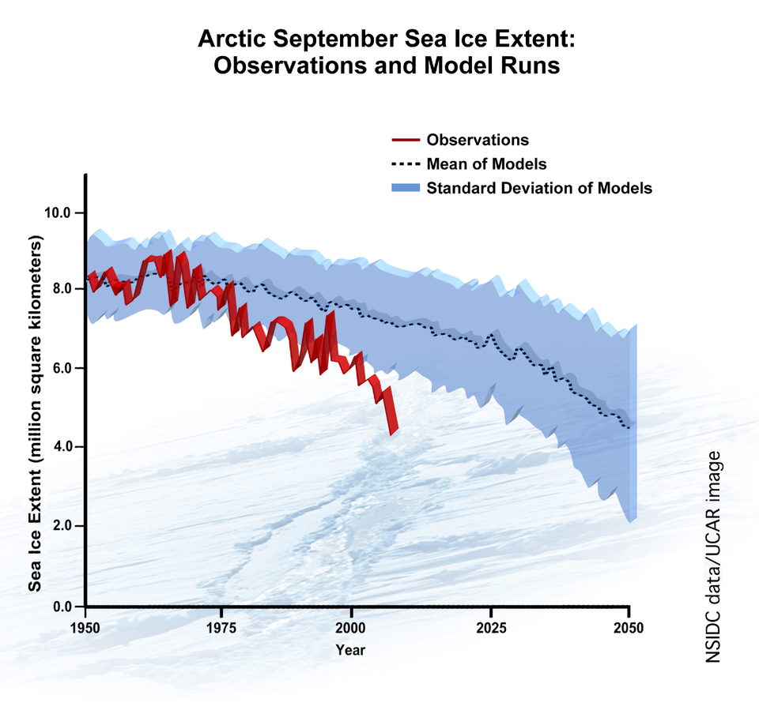

DOSSIER A42-CE-27 // CLIMATE & ENVIRONMENT
Arctic sea ice and alleged data concealment


The claim
Claim: agencies manipulate ice records to hide recovery or exaggerate decline. Annual rebounds occur, but long-term decline is measured. This file tests the narrow allegation rather than treating secrecy, coincidence, or public controversy as evidence by themselves.
Chronology
Satellite monitoring began in 1979; the 2012 minimum was followed by rebounds that did not erase the trend. Chronology helps separate contemporaneous knowledge from later interpretation; sequence alone cannot establish a causal relationship.
Primary record and data
NSIDC, NASA, Japanese satellites, ships, and buoys measure extent and thickness with published methods. Original records establish what was measured or decided, while independent work is needed to test methods and institutional conclusions.
Independent scientific evidence
Warming air and ocean, circulation, and albedo feedback affect ice; extent and thickness are distinct measures. Convergent observations and a plausible mechanism carry more weight than a single image, anecdote, or disputed quotation.
Alternative explanations
Melt ponds, coasts, and short records challenge retrieval; annual changes do not settle long-term trends. A strong alternative must explain the observations and remain open to disconfirmation; ordinary causes deserve the same scrutiny as extraordinary ones.
Limitations and uncertainty
Long records include coverage changes, instrument uncertainty, and methodological choices; independent datasets and explicit uncertainty ranges help bound conclusions. Uncertainty is stated explicitly rather than treated as support for the strongest version of a claim.
Calibrated verdict
Independent datasets show substantial decline, not coordinated concealment. Documented research, emissions, negligence, or secrecy should not be conflated with a broader unsupported coordinated plot.
Testable evidence requirements
Reprocess raw microwave data, compare sensors and in-situ thickness, and evaluate multi-decadal trends. A persuasive claim specifies what new evidence would change the assessment and allows independent replication, including negative results.
Sources and source limits
- NOAA NCEI, Global Climate at a GlancePrimary observation series and methods.
- IPCC Sixth Assessment Report, Working Group IMulti-author synthesis assesses climate evidence and uncertainty.
- NASA GISS, Global Temperature AnalysisPublished surface temperature series suitable for independent comparison.